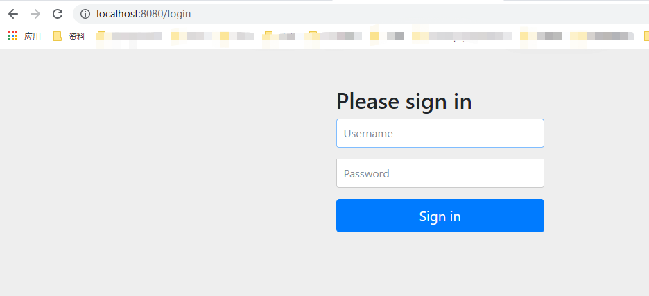
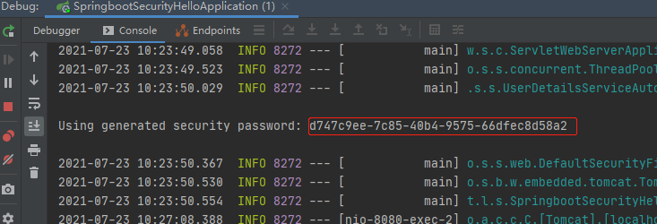
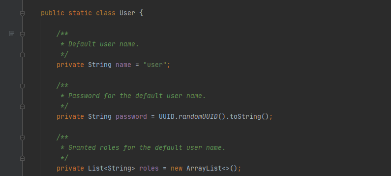
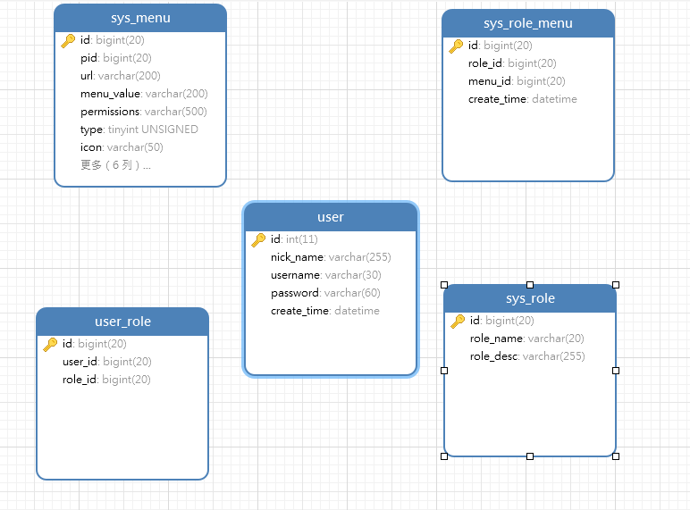
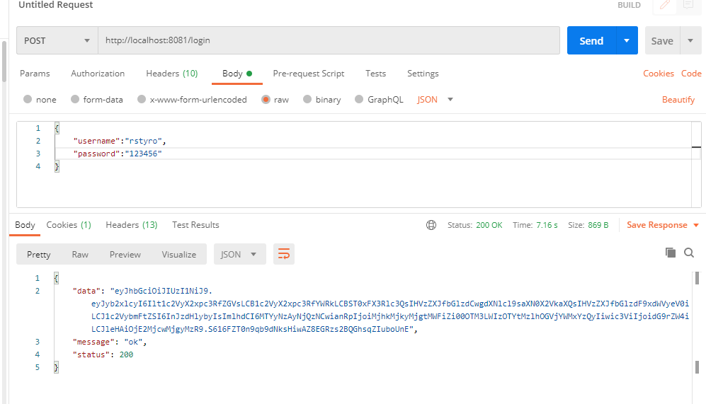
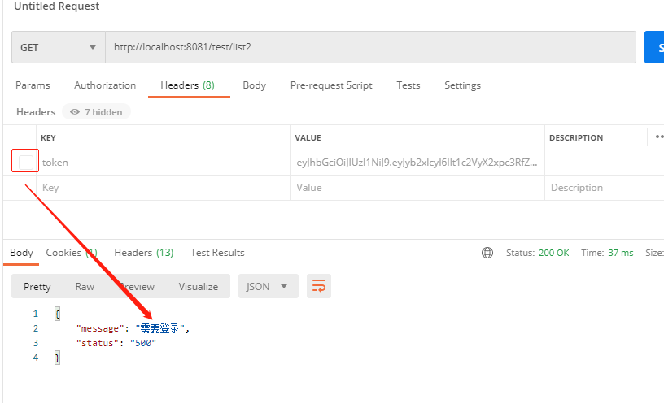
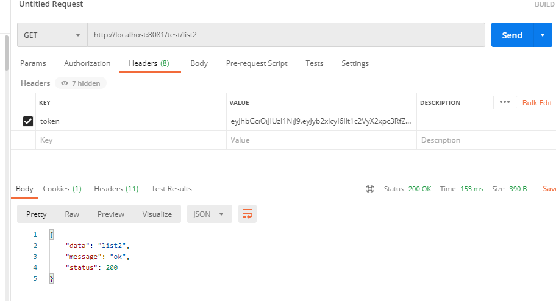

一、Spring Security概述
Spring Security是一个能够为基于Spring的企业应用系统提供声明式的安全访问控制解决方案的安全框架。它提供了一组可以在Spring应用上下文中配置的Bean，充分利用了Spring IoC，DI（控制反转Inversion of Control ,DI:Dependency Injection 依赖注入）和AOP（面向切面编程）功能，为应用系统提供声明式的安全访问控制功能，减少了为企业系统安全控制编写大量重复代码的工作。
Java 主流权限框架：
shiro、Spring Security
二、快速开始
- 本文的SpringSecurity版本:
5.4.6，需要 Java 8 或更高版本的运行时环境。 - 本文不想讲底层，直接适合实战使用
- 反正我只知道它是用来做权限控制的，本文是以Springboot整合作为例子
1、导入依赖
- 我现在使用的是Springboot 2.4.5 算目前挺新的版本
<dependency> |
2、编写一个测试接口
|
- 然后启动访问
/test,发现会自动跳转到spring security 的默认登录页面

- 那账号去哪取呢？
- 默认的用户是：
user,然后密码是UUID随机字符串在项目启动的时候在控制台打印

- 怎么知道的呢？可查看：
UserDetailsServiceAutoConfiguration.inMemoryUserDetailsManager() - 发现是从：
SecurityProperties这个类取的。然后发现该类上使用：@ConfigurationProperties(prefix = "spring.security")注解 - 那也就是可以配置的，往下拉看到一个内部静态User类

3、配置用户密码
- 既然知道是读取SecurityProperties中的user,那就可以配置了
- 在 application.yml 配置如下：
spring: |
4、基本原理
- 其底层就是经过一系列的过滤器实现权限验证的，如下，官网给出的完整过滤链（
5.4.6版本） - SpringSecurity 的过滤链排序：
- ChannelProcessingFilter
- WebAsyncManagerIntegrationFilter
- SecurityContextPersistenceFilter
- HeaderWriterFilter
- CorsFilter
- CsrfFilter
- LogoutFilter
- OAuth2AuthorizationRequestRedirectFilter
- Saml2WebSsoAuthenticationRequestFilter
- X509AuthenticationFilter
- AbstractPreAuthenticatedProcessingFilter
- CasAuthenticationFilter
- OAuth2LoginAuthenticationFilter
- Saml2WebSsoAuthenticationFilter
- UsernamePasswordAuthenticationFilter(表单认证)
- OpenIDAuthenticationFilter
- DefaultLoginPageGeneratingFilter
- DefaultLogoutPageGeneratingFilter
- ConcurrentSessionFilter
- DigestAuthenticationFilter(摘要认证)
- BearerTokenAuthenticationFilter
- BasicAuthenticationFilter(基本认证)
- RequestCacheAwareFilter
- SecurityContextHolderAwareRequestFilter
- JaasApiIntegrationFilter
- RememberMeAuthenticationFilter
- AnonymousAuthenticationFilter
- OAuth2AuthorizationCodeGrantFilter
- SessionManagementFilter
- ExceptionTranslationFilter(自定义异常处理器)
- FilterSecurityInterceptor(授权接口是否需要拦截)
- SwitchUserFilter
三、实战前后端分离
- 前面的例子，算hello world 入门，好像现在学啥东西都有个hello world。咱不能少
- 废话不多说，实战开始，现在2021年项目基本都是前后端分离了。
1、依赖引入
- 和hello world 一样意思引入依赖
<dependency> |
- 里面包含了：
spring-security-config、spring-security-web、这两个里面又包含了很多核心组件 - 我们只需引入Springboot帮我们封装好的：
spring-boot-starter-security即可。
2、实现自己的用户体系
- Spring-security 提供了UserDetailsService接口,我们重新实现
loadUserByUsername()即可 - 这个方法里面返回的
UserDetails用户信息有：用户名称、密码、权限信息，还有一些状态如：是否过期，是否可用等等 - 从 UserDetailsService 可以知道最终交给Spring Security的是 UserDetails
- 我们实现：
UserDetails构建我们自己的用户实体类。
|
- 其实就多了一个nickName，可以自定义其他的。
- 简单的设计了下用户表与权限表，大概如下：

- 然后重写
loadUserByUsername()方法，实现我们的用户与权限
|
3、自定义登录接口
- 默认登录接口是表单登录的，我们改造一下，改成JSON格式post请求
- 自定义一个登录过滤器，在UsernamePasswordAuthenticationFilter表单登录过滤器之前执行
** |
attemptAuthentication()方法接收参数，密码和数据库保存的一致- 然后包装成一个UsernamePasswordAuthenticationToken，进行认证，
- 之后就会调用我们实现的
loadUserByUsername(String username)方法 - 验证通过之后，就会调用过滤器的：
successfulAuthentication()返回token - 我们在配置一个解析JWT的过滤器，如果JWT是正常的，且没过期，我们就通过SecurityContextHolder给它授权，如下
/** |
- 这个拦截器，大致的流程是先从header或参数中获取前端传上来的token
- 解析token,得到用户与权限，通过SecurityContextHolder 给它验证通过，执行下一个过滤器
4、配置自定义过滤器
- 我们随便自定义了过滤器，但是还需要配置一下才能生效
- 我们需要继承：
WebSecurityConfigurerAdapter适配器
|
JWTLoginFilter只有当我们调用：/login接口的时候才会生效SecurityAuthTokenFilter每次接口调用都会走@EnableWebSecurity这个注解使security生效@EnableGlobalMethodSecurity这个是使权限注解生效，可选项有：- prePostEnabled=true 会解锁 @PreAuthorize 和 @PostAuthorize 两个注解,可以使用EL表达式
- securedEnabled=true 解锁 @Secured注解，不支持Spring EL表达式，指定的角色必须以
ROLE_开头 - jsr250Enabled=true 解锁：
@DenyAll全部拒绝，@RolesAllowed({“USER”, “ADMIN”})任意权限，@PermitAll都可访问
- PasswordEncoder 使用的是
BCryptPasswordEncoder - 在
config(HttpSecurity http)方法里，调用addFilterBefore()方法添加我们的过滤器 - 剩下的就是配置自定义的报错handler，代码都有注释就不解释了
- handler 代码就不粘贴出来了，后面给出完整的代码地址。
5、接口测试
- 核心方法与代码都讲了，接下来就是测试了
- 调用：
http://localhost:8081/login接口，得到token,然后通过token去请求其他的接口

- 登录的用户名/密码：rstyro/123456

